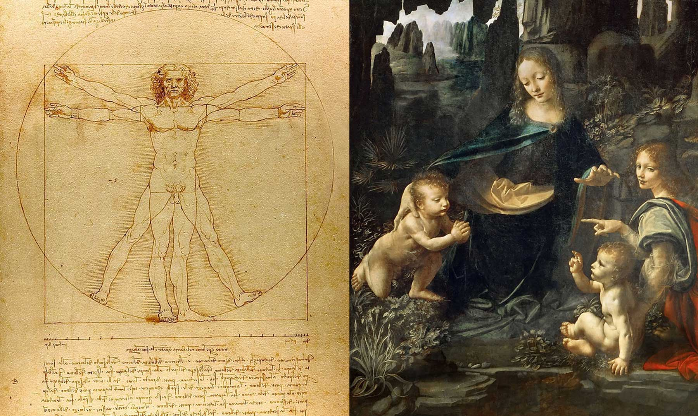

Leonardo di ser Piero da Vinci, más conocido como Leonardo da Vinci, fue un polímata del Renacimiento italiano. Nació el 15 de abril de 1452 en Vinci, una localidad de Florencia (Italia). Murió en Amboise (Francia) el 2 de mayo de 1519.
·Fue hijo de un notario y una campesina que nunca se casaron. Hasta los cinco años vivió en casa de su madre, pero después empezó a vivir con su padre y su madrastra y de vez en cuando con sus abuelos. Llegó a tener doce hermanastros y hermanastras que fueron mucho más jóvenes que él.
·El año 1466 empieza a practicar diversas actividades en el taller de un escultor llamado Andrea del Verrocchio. Allí empieza a pintar, a esculpir y a diseñar.
·Leonardo da Vinci se convirtió en pintor, escultor, ingeniero, inventor, músico, escritor y arquitecto, y se le consideraba un gran genio. Siempre tuvo mucho interés en los estudios anatómicos del cuerpo humano y podía dibujar los órganos humanos con mucho detalle.
·Fue aceptado en el gremio de pintores de Florencia en 1472 y abrió su propio taller de pintura y escultura, así que su fama comenzó a crecer y le encargaban muchos trabajos diferentes y muy importantes.
·Durante toda su vida estuvo al servicio de varios duques que le encargaban esculturas y pinturas de sus familias para enseñarlas en sus salones y sus jardines, pero lo que de verdad le interesaba era inventar nuevos vehículos, armas y objetos.
·Aunque siempre estuvo creando y construyendo nuevas obras, las luchas que hubo mientras vivía, tanto las luchas y rebeliones que hubo después de su muerte, fueron las culpables de que muchas de las cosas que creó fueran destruidas, quemadas o perdidas, incluyendo sus restos que los tiraron en un lugar desconocido después de una guerra.
·Todas las obras de Leonardo da Vinci son conocidas, pero las más famosas son: el cuadro de “La última cena”, que lo pintó en un mural del monasterio de Santa Maria delle Grazie en Milán; “La Gioconda”, que es más conocida como “La Monna Lisa”, y aún se debate si la mujer que está retratada en el cuadro existió de verdad o no; y “El hombre de Vitruvio”, que es un famoso dibujo que hizo sobre un hombre con 4 brazos y 4 piernas donde intentaba estudiar el cuerpo humano.
·También hizo muchas esculturas, pero ninguna ha podido llegar a nuestros días.
